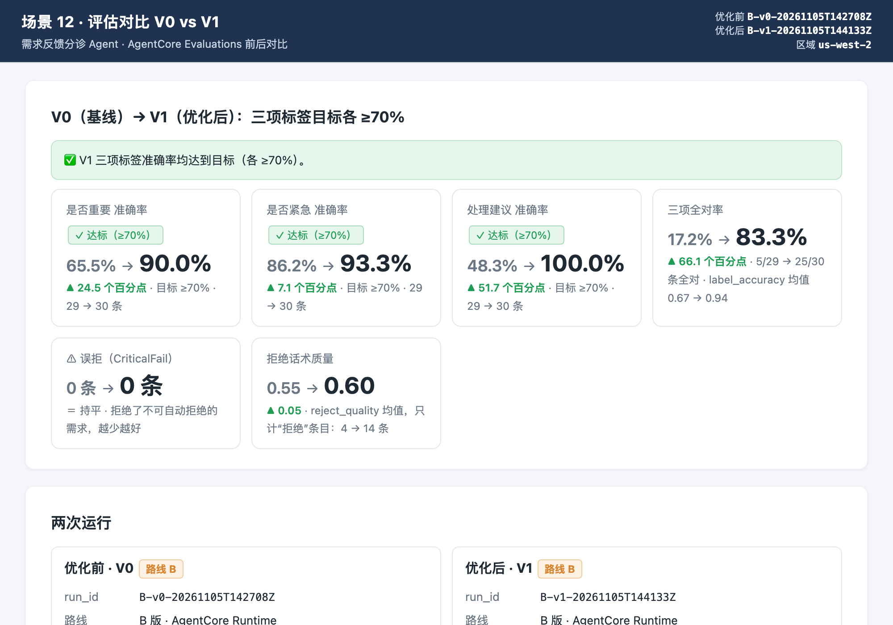
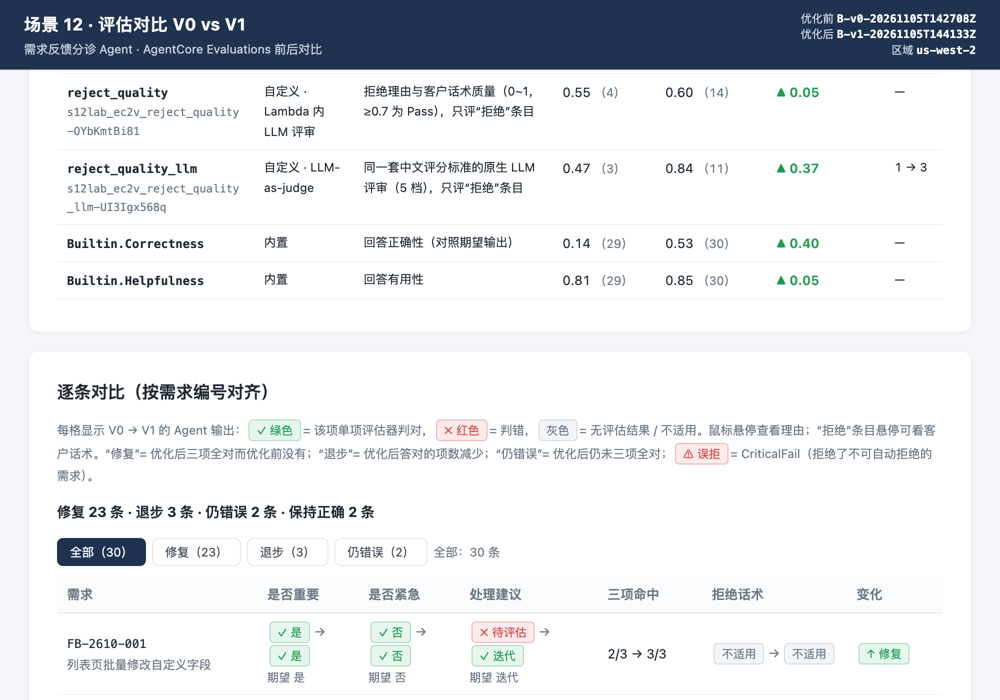
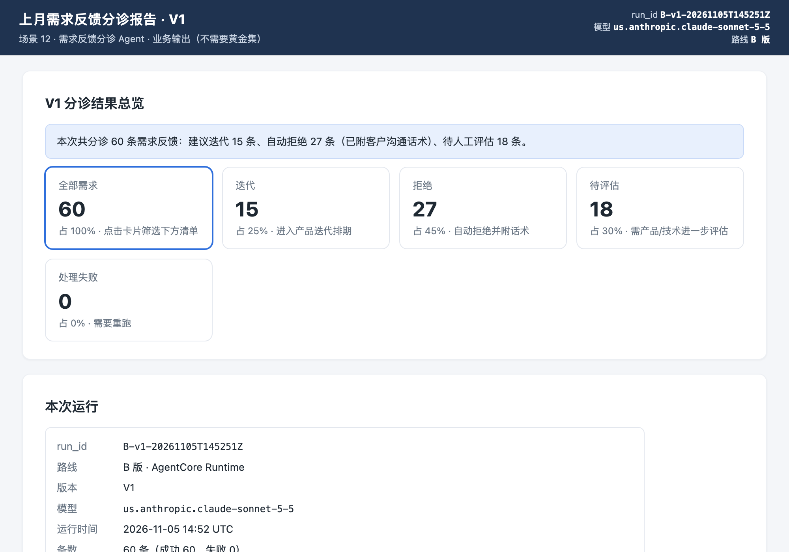

9再评估与前后对比 A/B 通用
对 V1 再跑一次同样的评估，用对比页面和控制台说明优化效果，再用 60 条上月需求生成分诊报告，准备 17:00 的 Demo。
对 V1 运行黄金集和评估
10 分钟用同一份黄金集、同一组评估器给 V1 打分，保证可比。
./10-A-run-local.sh golden./21-B-run-golden.sh./10-A-run-local.sh golden 跑的是 mock agent。你们自己的 Agent 这样重新评估：
导出日志的路线（A4）：让改好的 Agent 处理同样的 30 条黄金集，按 A4.2 的格式导出日志（每条都带 feedback_id），然后：
./11-A-convert-logs.sh check <新日志.jsonl>
./11-A-convert-logs.sh send <新日志.jsonl>
./12-A-check-telemetry.shsend 之后先等 2–3 分钟再运行 ./12-A-check-telemetry.sh（和 A4 一样），然后照常运行下面的 ./31-run-eval.sh（它评估最近一次运行，也就是这次导入；不是的话用 ./31-run-eval.sh --run A-imported-<时间>）。到 9.2 生成对比页时一定要指定前后两次导入：导入的运行都叫 A-imported-<时间>，版本统一记为 imported，./32-compare.sh 不带参数时按版本号（v0 / v1 / v2…）配对，导入的运行不会被选为“优化后”，配对可能不对，所以一定要指定。
./32-compare.sh --before A-imported-<优化前那次的时间> --after A-imported-<优化后这次的时间>run_id 在 send 输出里“✅ 已发送 … 个 session（run_id = …）”那一行。“优化前那次”就是 8.1 里改 Agent 之前做的基线。对比页两边显示为 IMPORTED（前）和 IMPORTED（后）。
ADOT 埋点的路线（A3.4）：评估脚本只评估登记在 .lab-state/runs.json 里的运行，本仓库的批量脚本和 A4 的导入会登记，你们自己的程序跑出来的 session 不会登记，所以 ./31-run-eval.sh 找不到它们（第 7 章也一样）。现场的做法：让你们的 Agent 跑这 30 条时同时按 A4.2 的格式写一份日志，再走上面的导出日志路线。
评估自己的 V2 同理：8.3 切换到 v2、8.4 让它生效后，跑同样的命令；V1、V2 都评估过时怎么对比见 9.2。
等 2–3 分钟后评估（自动评估最近一次运行，也就是 V1）：
./31-run-eval.sh═══ 结果（149s）· 目标：三项各 ≥ 70% ═══ 是否重要：90% ✅ 是否紧急：93% ✅ 处理建议：100% ✅ label_accuracy: 平均 0.94（30 条） reject_quality: 平均 0.60（14 条） reject_quality_llm: 平均 0.84（11 条） Builtin.Correctness: 平均 0.53（30 条） Builtin.Helpfulness: 平均 0.85（30 条） ✅ 达标 · 详细结果：results/eval-B-v1-20261105T144133Z.json
| 实测（30 条黄金集） | 是否重要 | 是否紧急 | 处理建议 | 结论 |
|---|---|---|---|---|
| A 版 V0 → V1 | 67% → 93% | 83% → 93% | 43% → 100% | ✅ 达标 |
| B 版 V0 → V1 | 66% → 90% | 86% → 93% | 48% → 100% | ✅ 达标 |
大模型每次运行会有几个百分点的波动，你的数字略有不同是正常的；关键是三项都越过 70%。注意 V1 拒绝的条目变多了（4 → 14），所以话术质量 reject_quality 平均分只有 0.6 左右——这是第 8 章可以继续优化的方向。
生成前后对比页面
2 分钟脚本把 V0 和 V1 的分数生成一个静态 HTML 对比页，并放到你的私有 S3 桶，方便在笔记本浏览器里打开。
./32-compare.sh脚本：32-compare.sh → labkit/compare.py（默认：“优化后”= 最新一次非 V0 评估，“优化前”= 同一路线在它之前最近一次 V0 评估；也可指定 --before results/eval-…json --after results/eval-…json）→ labkit/publish.py
▶ 对比 V0 B-v0-20261105T142708Z → V1 B-v1-20261105T144133Z（目标各 ≥70%） ✅ 对比页已生成（本地文件，可直接用浏览器打开）： results/compare-B-v0-20261105T142708Z-vs-B-v1-20261105T144133Z.html ☁️ 已上传到私有桶 s3://s12lab-zhang3-<account>-us-west-2/reports/compare-B-v0-20261105T142708Z-vs-B-v1-20261105T144133Z.html 👉 在笔记本浏览器打开（需已登录控制台），点右上角「打开」查看： https://us-west-2.console.aws.amazon.com/s3/object/s12lab-zhang3-<account>-us-west-2?region=us-west-2&prefix=reports/compare-B-v0-…-vs-B-v1-….html
- 在笔记本浏览器（已登录 AWS 控制台）打开脚本打印的链接。
- 在 S3 对象页面点右上角 打开（Open），对比页会在新标签页显示。


上面两张是 B 版实测对比页的截图（上：三项准确率与达标；下：评估器平均分与逐条对比）。
先看看对比页长什么样：示例对比页（合成数据）。页面内容：三项准确率前后变化与达标标记、柱状图（含 70% 目标线）、所有评估器的平均分对比、逐条用例的“修复 / 退步 / 仍错误”筛选。
V1、V2 都评估过时，默认的“优化后”是最后评估的那个非 V0 版本，对比的是 V0 → 它（例如 V0 → V2）。要看 V1 → V2，指定两次评估（run_id 或 results/eval-…json 路径都可以）：
./32-compare.sh --before <V1 的 run_id> --after <V2 的 run_id>在 CloudWatch / Evaluations 控制台对比
5 分钟用现成的控制台界面展示两次评估的差异。
- CloudWatch → GenAI Observability → Bedrock AgentCore → 你的 Agent → Evaluations 页签。
- 右上角时间范围先选 V0 那次运行的时间段（例如 7.1 前后 30 分钟），记下 label_important / label_urgent / label_decision 的平均分；再选 V1 那次运行的时间段对比。
- B 版还可以在 Sessions 里按 session 名区分：V0 的 session 名含
-v0-，V1 的含-v1-。 - （可选）CloudWatch → Metrics →
Bedrock-AgentCore/Evaluations，把各评估器的分数画成随时间变化的折线，V0 → V1 的跳升一目了然。
用 60 条上月需求生成分诊报告（场景最终输出）
8 分钟这就是场景要的结果：自动拒绝的需求（附理由和话术）+ 其它需求的重要 / 紧急分布。
./34-triage-report.sh a./34-triage-report.sh b脚本：34-triage-report.sh → labkit/report.py。用当前版本（V1）处理 data/feedback_last_month.jsonl 的 60 条，生成报告并上传到私有桶。
▶ 运行 60 条需求 · 路线 B · 版本 v1 · 模型 us.anthropic.claude-sonnet-5-5 · 并发 6 [ 1/60] FB-2610-001 11.2s 重要=是 紧急=否 建议=迭代 [ 2/60] FB-2610-002 15.0s 重要=否 紧急=否 建议=拒绝 [ 3/60] FB-2610-003 11.5s 重要=是 紧急=是 建议=迭代 … ✅ 完成：60 条，用时 142s，失败 0 条 → results/run-B-v1-20261105T145251Z.jsonl run_id = B-v1-20261105T145251Z ▶ 分诊报告：B-v1-20261105T145251Z · 60 条 ✅ 分诊报告已生成（本地文件，可直接用浏览器打开）： results/triage-report-B-v1-20261105T145251Z.html ☁️ 已上传到私有桶 s3://s12lab-zhang3-<account>-us-west-2/reports/triage-report-B-v1-20261105T145251Z.html 👉 在笔记本浏览器打开（需已登录控制台），点右上角「打开」查看： https://us-west-2.console.aws.amazon.com/s3/object/…报告第一行就是结论，实测为：本次共分诊 60 条需求反馈：建议迭代 15 条、自动拒绝 27 条（已附客户沟通话术）、待人工评估 18 条。下面还有重要 × 紧急 2×2 矩阵、按模块分布、自动拒绝清单（内部理由 + 客户话术全文）和待评估清单。

准备 17:00 Demo（3 分钟）
10 分钟按模板准备 3 分钟演示：问题 → 黄金集 → 评估 → 优化 → 结果。
| 时间 | 讲什么 | 展示什么 |
|---|---|---|
| 0:00–0:30 | 问题：每月大量需求反馈，人工判断重要 / 紧急 / 是否迭代，拒绝时话术难统一 | 一条典型需求原文 |
| 0:30–1:00 | 标准：我们讨论定下的口径和黄金集（30 条，五维覆盖，含不可拒绝红线） | 黄金集 / 讨论结论 |
| 1:00–1:45 | 评估：V0 三项准确率多少，主要错在哪一维 | CloudWatch Evaluations 页签 + 7.5 的失败归因 |
| 1:45–2:30 | 优化：改了什么（口径 / 工具 / 红线 / 话术），V1 分数 | 9.2 对比页（三项 V0 → V1） |
| 2:30–3:00 | 结果：上个月 60 条需求的分诊报告；下一步（接入真实数据、在线评估持续监控） | 9.4 分诊报告 |